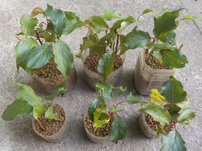
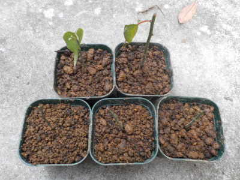
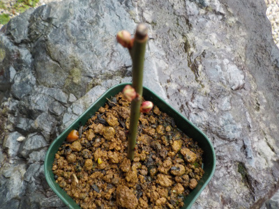
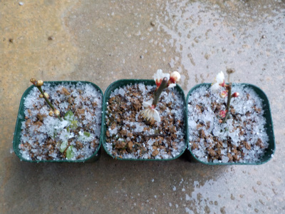
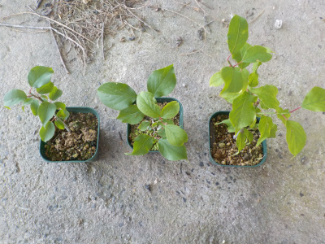
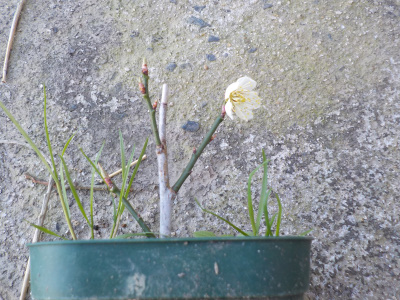
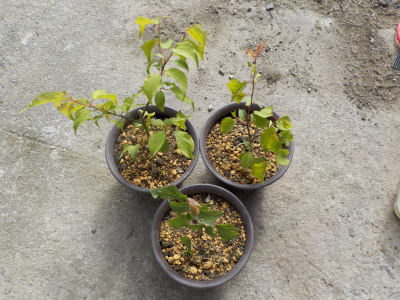
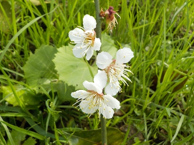

更新日 : 2021/05/29

数打てば当る方式です。
数えてないですが、これだけあったら何本か成功しそうな気がします。
更新日 : 2021/08/15

ペットボトルの底から根っこが見えたので鉢上げしました。
葉っぱと根っこがあるもの2本と、根っこだけあるもの3本です。
葉っぱが無いのは春に芽がでるのかな？心配です。
更新日 : 2022/01/23

去年挿し木した梅から何かが出そうです。
花かな、芽かな。
今の時期なら花だろうな。花は栄養を使いそうだから嫌だな。でも花見もしたい。
更新日 : 2022/02/20

今日は雪が降ってて寒いですが、梅の花が咲いていたので写真を撮りました。
2本咲いてて、1本はまだ蕾が小さいです。
同じ木の枝を挿し木して同じ場所に置いていますが、成長が違いますね。
枝の太さが関係してそうです。
更新日 : 2022/06/12

去年の挿し木は3本育っています。
いい感じに葉っぱが増えています。
更新日 : 2023/03/05

一昨年挿し木した梅の木です。
まだ小さいですね。
今年はしっかり日光に当てて、大きく成長させたいと思っています。
更新日 : 2023/05/05

プレステラで育てていた梅の木を、ちょっと大きい鉢に植替えしました。
今挿し木の梅で育っているのはこの3本です。
更新日 : 2024/02/25

2021年に挿し木で増やした梅が開花しました。
鉢植えなので、好きなアングルで写真が撮れます。
梅の挿し木で盆栽を楽しみたいです。
【おいしいものを食べよう。】【たくさん寝よう。】
【ソロ活をしよう!】【季節感のあることをしよう。】【動画視聴はほどほどに。】【当サイトの全てのコンテンツは無断転載禁止です。】